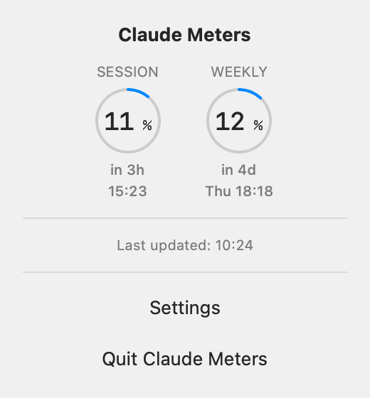

Claude Meters
A tiny macOS menu bar utility that shows your Claude Code Session (5-hour) and Weekly usage as two glanceable ring meters - nothing else.
Download for macOS View on GitHub
Free and open source (MIT) · Requires macOS 13 Ventura or later


Features
- Two rings, always in view. Session (5-hour) and Weekly usage appear as percentages in the menu bar.
- Click for reset countdowns. The popover shows how long until each meter resets.
- Stays current on its own. It refreshes every 2 or 5 minutes (your choice), retries with exponential backoff when a fetch fails, and fetches again when your Mac wakes from sleep.
- Menu bar only. No Dock icon and no window to keep open. Launch at login is optional.
- Light and dark mode, VoiceOver. It follows your appearance setting and supports VoiceOver.
- Eight languages. English, Japanese, Korean, German, French, Italian, Brazilian Portuguese and Spanish. It follows your system language, or you can pick one in Settings.
Not included: usage history, graphs, forecasts, notifications, multiple accounts and per-model breakdowns.
Requirements and install
- macOS 13 (Ventura) or later.
- Claude Code installed and signed in with a Claude Pro or Max plan.
- Open the latest release and download
ClaudeMeters-v*-macOS.dmgfrom Assets. You don't need the "Source code" archives. - Open the
.dmgand dragClaude Meters.appinto theApplicationsfolder. - Launch it. The two rings appear in your menu bar.
Releases from v0.1.1 onward are signed with a Developer ID certificate and notarized by Apple, so macOS opens them without a Gatekeeper warning. There is no automatic update: Check for Updates in Settings tells you when a newer version is out and opens the releases page.
How it gets your usage data
Claude Meters never asks for or stores its own credentials. It reads the OAuth token that Claude Code already keeps in your macOS Keychain (the Claude Code-credentials item) and uses it to ask Anthropic's usage endpoint for your Session and Weekly numbers.
It reads the token through /usr/bin/security, the same command Claude Code uses to save it, so a Keychain prompt normally doesn't appear, and doesn't come back after Claude Code refreshes its token. If one does appear (for example, while your keychain is locked), approve it with your login password.
The only other network request is the update check, and only when you press Check for Updates: it asks GitHub for the latest release.
An unofficial tool, built on an undocumented endpoint. That endpoint isn't part of Anthropic's public, documented API, and it can change or stop working without notice. If the response ever stops matching what the app expects, Claude Meters shows a failure (–) rather than guessing.